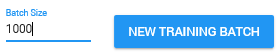
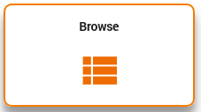
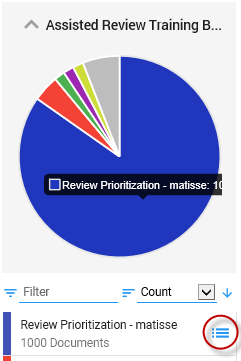
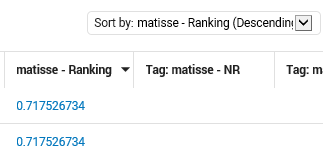
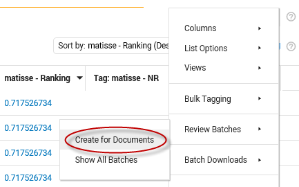
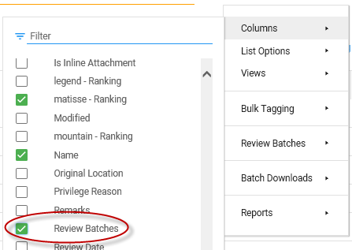
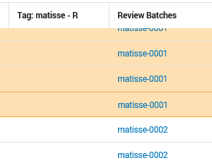

Step 3: Create Review Batches
Prerequisites
Instructions
-
In Assisted Review, create a New Training Batch for each reviewed Initial Training Set. The size depends on the number of available reviewers.

- Open the Home page, select Browse.

-
In Facet View, select the new training batch that has been created.

-
Open the Training Batch in the Document List.
-
Add the ranking field for the Training Batch.

-
Sort on the ranking field with the highest ranking on top (Descending).
-
Now, based on this sorting order, create Review Batches.

-
Divide the sub-batches over all reviewers. Add the Review Batches column to sort on the different sub-batches.

-
Inform all reviewers which Review Batch to review.

-
Repeat step 1 to 9 until all documents are reviewed.